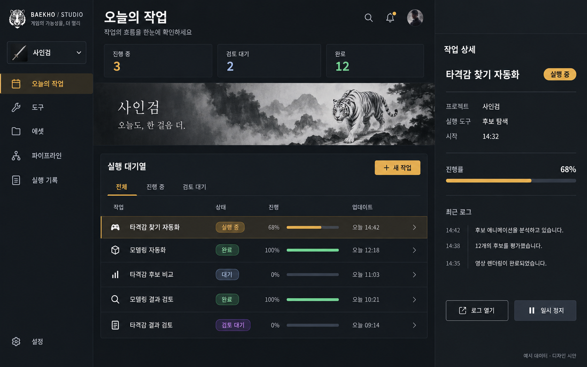
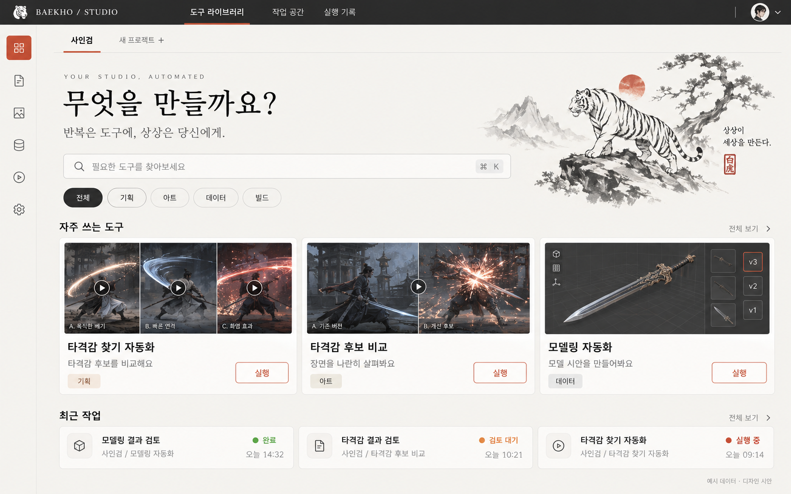
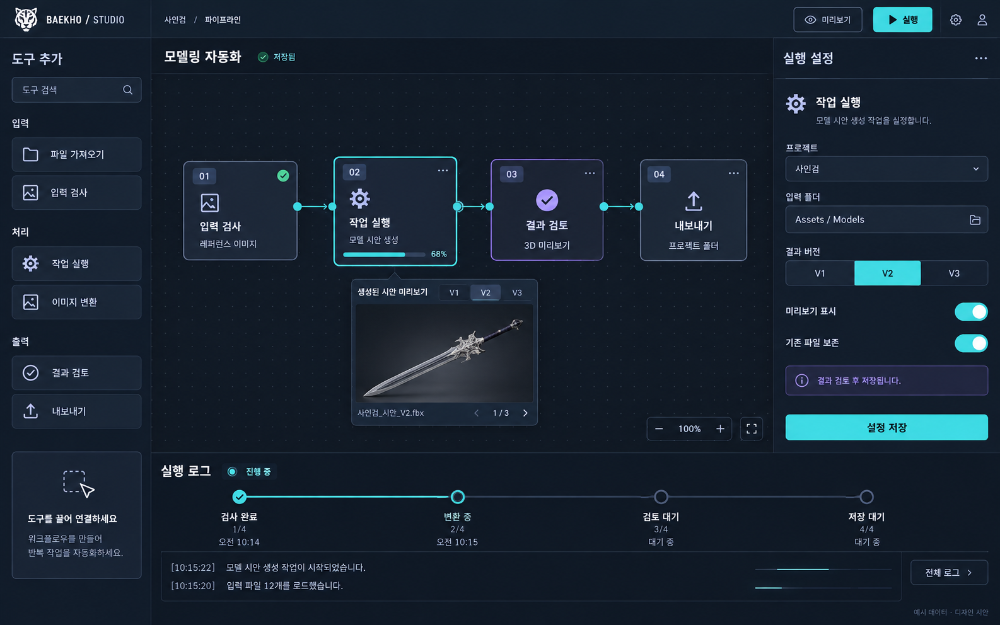

후보를 재생하며 차이를 판단
팀원이 만든 타격감 작업공간을 사용합니다. 같은 구간 재생, 나란히 보기, 선택 표시는 실제 결과 형식과 기존 UI에 맞춰 검토할 UX 후보입니다. 결과를 다시 찾는 경로는 공통으로 연결합니다.
검색·생성 여부, 비교 기준, 재생 가능한 매체는 미확정입니다.
DESIGN HANDOFF · 사인검 · 2026.10.08
공통 탐색·작업 상태·결과 보관을 일관되게 만들고, 타격감 찾기와 모델링의 내부 UI·작업 구조는 팀원들이 만든 작업물을 활용합니다.
최신 기본 UI·UX 규칙 · 도구 연결 가이드 · 도구 인계 양식
검토용 정적 디자인 문서입니다. 화면의 기능·수치·상태는 UX 제안 또는 예시입니다. 피그마의 내부 패널 배치를 모든 도구에 강제하지 않습니다. 시안과 합의 내용이 다르면 최신 기본 UI·UX 규칙을 우선하며, 실제 기능 지원 범위는 각 담당자가 인계 양식에 기록합니다.
팀원이 만든 타격감 작업공간을 사용합니다. 같은 구간 재생, 나란히 보기, 선택 표시는 실제 결과 형식과 기존 UI에 맞춰 검토할 UX 후보입니다. 결과를 다시 찾는 경로는 공통으로 연결합니다.
검색·생성 여부, 비교 기준, 재생 가능한 매체는 미확정입니다.
팀원이 만든 모델링 편집기와 내부 작업 순서를 사용합니다. 3D 회전·확대와 버전 비교는 지원 범위에 따라 연결하고, 결과 정보와 원래 작업으로 돌아가는 경로를 공통으로 제공합니다.
지원 모델 형식, 편집 범위, 출력 규격은 미확정입니다.
B의 도구 탐색을 공통 입구로 사용하고, 도구에 들어간 뒤에는 담당 팀의 기존 작업공간을 활용합니다. A의 작업 목록은 ‘실행’ 탭에 적용합니다. C는 여러 단계를 연결할 실제 요구가 있을 때 검토합니다.
다크·앰버 화면에 실행 대기열과 상세 패널을 배치합니다. 반복 실행과 오류 대응에 적합합니다. 제작자의 첫 진입 화면으로 쓰면 후보 탐색과 미리보기가 작아질 수 있습니다.

밝은 배경과 여백, 검색 가능한 도구 목록을 사용합니다. 처음 쓰는 도구를 이해하고 시각 후보를 살피기 좋습니다. 진행 중 실행은 요약으로 노출하고 상세는 ‘실행’으로 연결합니다.

미드나이트 톤의 캔버스와 선택 단계의 인스펙터를 사용합니다. 여러 단계의 의존 관계를 설명하기 좋습니다. 연결 작업이 실제로 필요한 모듈에 한해 채택하고, 단일 도구의 기본 조작으로 요구하지 않습니다.

세 이미지는 내장 ImageGen으로 생성한 시각 탐색 자료입니다. 이미지 속 텍스트는 기능 명세가 아닙니다. 생성 프롬프트와 출처 확인
프로젝트 선택은 상단에 둡니다. 제작자는 최근 도구와 후보, 실행 담당은 대기열, 검수 담당은 확인할 결과를 우선 표시합니다. 역할마다 메뉴 구조를 바꾸지 않습니다.
결과를 다시 찾고 원래 작업·설정으로 돌아가는 방식은 통일합니다. 타격감의 영상 비교와 모델링의 3D·버전 보기는 각 도구의 UI를 사용합니다. 피그마 D 화면은 비교·선택·보관 경험의 참고이며 고정 패널 규격이 아닙니다.
Figma 결과 비교 화면 ↗제목 · 목적 · 입력 형식 · 출력 형식
상태 · 미리보기 · 다음 행동
각 모듈은 이 항목과 실제 지원 범위를 전달합니다. 내부 입력·편집·미리보기 구조를 유지하면서 공통 탐색, 상태 용어, 기본 행동과 오류 안내를 연결합니다. 프레임워크나 API 방식은 별도 합의합니다.
| 상황 | 사용자에게 보이는 정보와 행동 |
|---|---|
| 로딩·실행 | 입력값과 복귀 경로를 보존하는 경험을 목표로 합니다. 화면 이탈 시 작업이 멈추는 도구는 미리 알리고 초안 보관 등 대안을 제공합니다. 실제 진행률이 없으면 단계명과 경과 시간을 표시합니다. |
| 빈 화면 | 첫 사용, 검색 결과 없음, 결과 없음의 이유를 구분하고 도구 찾기·필터 초기화 등 다음 행동을 제공합니다. |
| 오류·재시도 | 실패 위치와 보존된 결과를 표시합니다. 같은 조건 재시도와 조건 수정 후 실행을 구분하고, 새 시도를 이전 실행에 연결합니다. |
| 권한 | 사용 불가 이유를 해당 행동 가까이에 설명합니다. 실제 지원되는 권한 안내 경로만 노출합니다. |
| 버전·검토 | 도구 버전, 결과 버전, 재실행 이력을 구별합니다. 실행 완료와 검토 완료는 별도 상태로 표시합니다. |
| 저장·적용 | 선택 결과와 저장 대상을 명확히 표시합니다. 원본을 변경하는 모듈에만 변경 범위 확인과 별도 ‘적용’ 단계를 둡니다. |